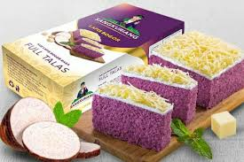

FOOD PAGE
Lapis Sangkuriang is a popular traditional cake from Bogor, Indonesia, known for its unique layers and delicious taste. The cake is typically made from cassava (tapioca) as the main ingredient, giving it a chewy yet soft texture. What sets Lapis Sangkuriang apart is its colorful layers, often in vibrant shades of purple, yellow, or green, with each layer representing different flavors, such as pandan, cheese, and cassava.
